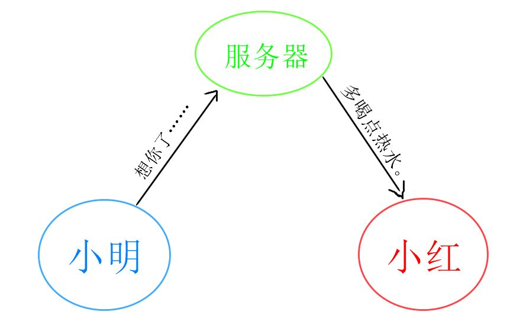

原文连接:https://www.cnblogs.com/fundebug/p/mitm-for-https.html
摘要： 当年12306竟然要自己安装证书...
- 原文：知道所有道理，真的可以为所欲为
- 公众号：可乐
Fundebug经授权转载，版权归原作者所有。
一、什么是MITM
中间人攻击(man-in-the-middle attack, abbreviated to MITM)，简单的讲，就是黑客悄悄的躲在通信双方之间，窃听甚至篡改通信信息。而通信双方并不知道消息已经被截获甚至篡改了。
举个例子，小明用微信发一条消息给小红，这条消息会从小明的手机发送到微信的服务器，再由微信服务器转发给小红，理论上讲，微信服务器是可以查看或者修改小明发送的信息的。这个时候，微信服务器就可以是实施攻击的中间人。

也有一些人，会通过代理服务器浏览某些外网，这里的代理服务器其实就充当了中间人的角色。
对于个人而言，MITM到底有什么用？这就得先从MITM的攻防说起了。
二、防攻击
首先看看如何防止攻击。最有效的防攻击手段就是一次性密码(One Time Password)，由信息论发明人香农提出，理论上讲是绝对安全的。但是一次性密码也有个前提，那就是安全的把密码传达给对方。这里好像就已经陷入死胡同了。
对于访问互联网而言，无论是通过浏览器还是APP客户端，一般都会使用HTTPS的方式通信，这其实就是一种比较有效的加密方式。在这种通信过程中，客户端或者操作系统内置了权威CA(certification authority)的根证书，而服务器在通信之初，会先返回在CA那里获取的签名证书，然后客户端用根证书验证证书有效性，最后使用验证通过的证书提供的公钥加密数据。
这里有个前提假设，那就是权威的证书机构不会把签名信息泄露出去。What an F-word，是不是有种无力感，我们的互联网安全其实还是建立在人性和道德的基础上。这里其实也有个死循环，系统通过服务器的CA证书证明有效性，而CA本身又需要其他CA来认证自己的有效性。解决这个问题其实是通过系统或者浏览器本身集成知名根证书。
早年12306非得使用自己签名的证书，而主流浏览器又不认可，导致用户需要在首次下载证书并安装。这其实是个很危险的操作，不法分子完全可以利用这个机制把非法证书安装到用户设备上。好在现在12306已经采用DigiCert颁布的证书了。
除了CA数字证书，还有一些专用的密钥交换协议，比如ZRTP、HPKP、DNSSEC等，他们都能在一定程度上保障通信安全。
除了直接认证之外，还可以通过篡改检测、取证分析等手段防范MITM。
简单提一下，目前最有效的加密方式可能是量子加密(Quantum cryptography)。量子加密同时拥有数学和量子力学两大学科加持，只要数学和量子理论没有问题，那么量子加密理论上就是绝对安全的。关于量子加密，以后会专门讲一下。
三、攻击
以HTTPS加密破解为例。为防止不法分子技术滥用，本文仅分享一下原理。
我们不防在客户端和服务器之间加入一个“中间人”，比如在电脑端安装Fiddler（抓包神器）。关于Fiddler抓包的方法网上教程很多，这里就不赘述了。直接上图：

- 黑客通过特殊途径在被攻击者的手机上安装根证书；
- 客户端发起连接请求，代理服务器（Fiddler）在中间截取请求，返回自己签名的伪造证书；
- 客户端收到证书后会在系统中查找信任的根证书，因为黑客已经事先在被攻击者手机上安装了自己的根证书，因此客户端验证通过；
- 客户端后续就会把Fiddler当成合法的服务器；
- 而Fiddler会与真实的服务器通信，截获密钥，解密数据。
至此，服务器和客户端的数据对于中间人Fiddler而言已经是完全透明的了。
四、小结
其实，掌握了MITM技术，了解各大APP的实现逻辑就很简单了，一众收费的APP基本可以实力碾压。
失而复得的手机也许应该格式化，没准有人在钓鱼。
想起以前自己说的一句话，知道原理，真的可以为所欲为。
关于Fundebug
Fundebug专注于JavaScript、微信小程序、微信小游戏、支付宝小程序、React Native、Node.js和Java线上应用实时BUG监控。 自从2016年双十一正式上线，Fundebug累计处理了20亿+错误事件，付费客户有阳光保险、核桃编程、荔枝FM、掌门1对1、微脉、青团社等众多品牌企业。欢迎大家免费试用！